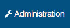
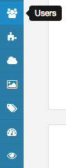
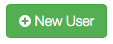
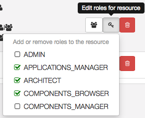
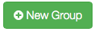
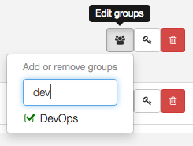

User(s) and Roles management
This section describe how you can manage some users within Alien.
LDAP integration
If you wish to integrate with an LDAP directory please go here.
Note that you can use LDAP for users and eventually rôle management. You can also manage roles in Alien even for LDAP user if you wish. In addition you can have users managed in LDAP and create some additional user that will be managed within Alien.
Roles
In order to edit users in Alien 4 Cloud you must have the ADMIN role. Default username and password when starting alien 4 cloud are admin / admin
User(s)
In order to manage users go the to page by clicking on the Administration  button in the navigation bar. Then select the user tab on the administration side navigation bar or on the user main icon.


The user page allows you to manage both users and groups. On the user tab you can search users and see the list of users matching your request.

Create user
In order to create a new user within Alien just click on the New User button . The create user modal appears and allows you fill-in initial data for your user.

Admin is responsible for setting up the username (that will be used for login) and the password of the user.
Limitations
We are working on adding the ability for a user to edit it’s details but this is currently not an available feature. Changing user details can now be done only by an ADMIN user through the REST API. Of course when using LDAP integration the password are managed by LDAP and there is no requirement for any management in Alien.
Search user

Remove user

Grant rôle(s) to a user

Group(s)

Create a group


Remove a group
Grant rôle(s) to a group
Add/Remove a user to/from a group

Roles in Alien 4 Cloud
These roles describes global roles you can grant to a user. From his/her roles Alien 4 Cloud will display and allow some operations.
| Role | Description |
|---|---|
| ADMIN | Manages users, plugins, configure clouds + all other roles. |
| APPLICATIONS_MANAGER | Create new application(s). |
| ARCHITECT | Create and edit topology template(s). |
| COMPONENTS_BROWSER | [Deprecated] Not used anymore for validation. Can list components and see details for any of them |
| COMPONENTS_MANAGER | Manage TOSCA cloud service archives to add/remove components from the catalog. |
A user with no roles can log-in and view the resources for which he has been granted. For example a user with no global roles can still access and manage applications on which he has resources roles (see application and environments roles).